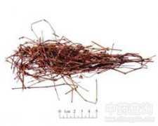

杠板归

拼音
Gànɡ Bǎn Guī
别名
蛇倒退、犁头刺、河白草、蚂蚱簕、急解素、老虎脷、猫爪刺、蛇不过、蛇牙草、穿叶蓼
来源
为蓼科蓼属植物贯叶蓼Polygonum perfoliatum L.的全草。夏秋植株生长茂盛时采集，晒干。
生境分布
生于山谷、灌木丛中或水沟旁。主产江苏、浙江、福建、江西、广东、广西、四川、湖南、贵州。
药材特点
多年生蓼生草本。茎有棱，红褐色，有倒生钩刺。叶互生，盾状着生；叶片近三角形，长4～6cm，宽5～8cm，先端尖，基部近心形或截形，下面沿脉疏生钩刺；托叶鞘近圆形，抱茎；叶柄长，疏生倒钩刺。花序短穗状；苞片圆形；花被5深裂，淡红色或白色，结果时增大，肉质，变为深蓝色；雄蕊8；花柱3裂。瘦果球形，包于蓝色多汁的花被内。花期6～8月，果期9～10月。
性状
无性状数据
性味
酸，凉。
功能主治
清热解毒，利尿消肿。用于上呼吸道感染，气管炎，百日咳，急性扁桃体炎，肠炎，痢疾，肾炎水肿；外用治带状疱疹，湿疹，痈疖肿毒，蛇咬伤。
用法用量
0.5～1两；外用适量，鲜品捣烂敷或干品煎水洗患处。
化学成分
含靛甙（indican）、水蓼素（persicarin）、p-香豆酸（p-coumaric acid）阿魏酸、香草酸、原儿茶酸（protocatechuic acid ）、咖啡酸（caffeic acid）。
药理作用
1：无药理作用数据
摘录
《全国中草药汇编》